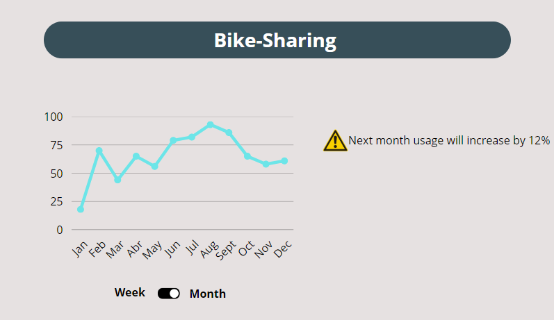

Requirements for the Bike Sharing Application
Overview
The application will allow the user to analyze bike sharing data to determine the stages of highest and lowest bike usage in order to predict additional bike needs or relocation.
Functional Requirements
- Administrator Login:
- The administrator should be able to log in to the application with valid credentials.
- Data Visualization:
- Once authenticated, the administrator will be able to view charts and tables representing bike usage in the city.
- Bike usage forecasting:
- The application should provide a forecasting function that suggests when more bikes may be needed at a specific stage and when bikes from less-used stages could be relocated.
User Interface Mock-ups
Below are some examples of what the user interface of the application could look like:
